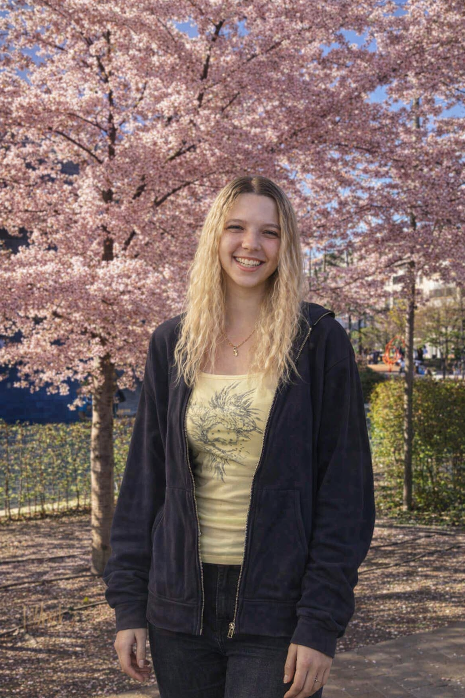

Magyar Virág

„A részletekben értem meg az embert.”
Pszichológia hallgató · Debreceni BTK
Kutató jelölt · Diákmunka pályázó
Precíz, elemző és empatikus gondolkodású pszichológia hallgató. Tizenhárom év versenyszerű tornázás megtanított arra, hogy az eredmény kitartó, fegyelmezett munkából születik. Ugyanezt az értékrendet viszem a tudományba és a mindennapjaimba.
Analitikus gondolkodásmód, rendszerező készség, részletorientált munkavégzés. Pszichológiai kutatáshoz és adatértelmezéshez is alkalmazható.
Figyelmes hallgatóság, megértő, illemtudó kommunikáció. Interperszonális kapcsolatokban mély empátia, emberi helyzetekben türelmes jelenlét.
13 év versenyszerű sport megalapozta a munkamorált: hosszú távú célokra is képes fókuszálni, nem riad vissza az ismétléstől és az aprómunkától.
Magyar anyanyelvű. Angol C1 szintű felsőfokú, tudományos szövegek olvasása és írása szintjén is. Aktívan fejleszti szakmai szókincsét.
Teljes körű CV — tanulmányok, eredmények
Általános sablon — diákmunka pályázatokhoz testre szabható
Pszichológiai kutatási részvétel dokumentációja — amint elkészül publikálható anyag frissülni fog